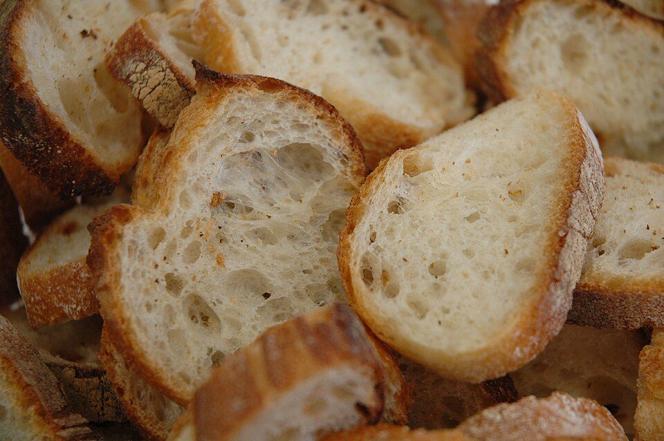

▶ 2 底板メニュー
メニュー
メニューと価格は準備中です。下の三つの枠は、これから入る内容の置き場として並べました。
品書き準備中
価格準備中
ご予約・お取り置き準備中
提供内容を断定するものではありません。確認できた段階でご案内します。
ギャラリー(イメージ)
パンの写真




写真はパンのイメージです。お店のものではなく、お店で提供している商品を示すものでもありません。
メニューと価格は準備中です。下の三つの枠は、これから入る内容の置き場として並べました。
品書き準備中
価格準備中
ご予約・お取り置き準備中
提供内容を断定するものではありません。確認できた段階でご案内します。
ギャラリー(イメージ)

写真はパンのイメージです。お店のものではなく、お店で提供している商品を示すものでもありません。